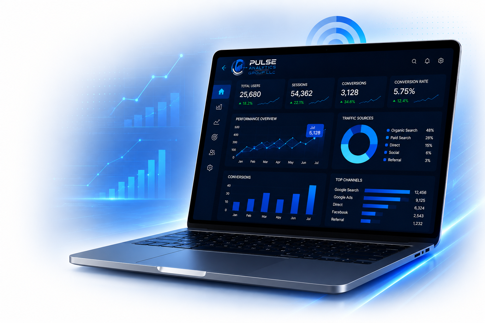
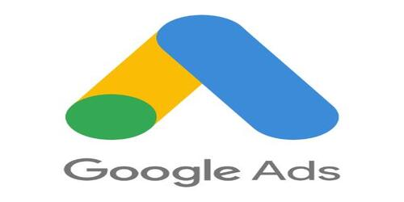
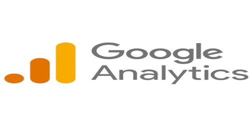
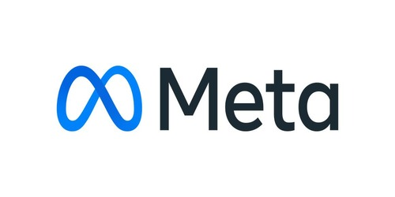
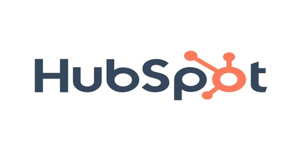

The world's leading search platform, helping businesses connect with customers when they're actively searching for products and services.
Strategic Digital Marketing & Growth Solutions
Your website should be more than an online brochure—it should be one of your most valuable business assets. Pulse Analytics Group LLC combines strategic digital marketing, search engine optimization, website development, paid advertising, analytics, and AI-powered marketing solutions to help businesses attract qualified customers, increase conversions, and build sustainable long-term growth.

Great marketing starts with the right technology. Pulse Analytics combines industry-leading platforms for search engine optimization, digital advertising, analytics, website development, customer relationship management, and business intelligence to create integrated marketing strategies that drive measurable business growth.
The world's leading search platform, helping businesses connect with customers when they're actively searching for products and services.

Reach qualified customers through highly targeted advertising campaigns designed to maximize return on investment.

Measure website performance, understand visitor behavior, and make informed marketing decisions using real data.

Build brand awareness and engage customers across Facebook and Instagram through strategic social media marketing.
Flexible, scalable websites designed to support businesses of every size while maintaining performance and usability.
Powerful e-commerce solutions built to help online businesses grow sales and provide exceptional shopping experiences.

Marketing automation and customer relationship management tools that help turn leads into loyal customers.
Interactive reporting dashboards that transform complex marketing data into meaningful business insights.
Successful digital marketing isn't built on a single service—it's the result of multiple strategies working together. From search engine optimization and website development to paid advertising, social media, analytics, and AI-powered solutions, Pulse Analytics provides integrated marketing services designed to support your business at every stage of growth.


Every business has unique challenges, opportunities, and growth objectives. Rather than offering one-size-fits-all marketing packages, Pulse Analytics develops customized strategies that combine the right services to increase visibility, attract qualified customers, and deliver measurable results.
Improve your visibility where customers are already searching. Our SEO strategies focus on technical optimization, keyword research, content strategy, and authority building to increase qualified organic traffic.

Your website should inspire confidence and convert visitors into customers. We create modern, responsive websites designed for performance, accessibility, user experience, and search engine optimization.

Reach customers at the exact moment they're searching for your products and services through professionally managed advertising campaigns that maximize every marketing dollar.

Make confident business decisions using meaningful data. We implement analytics, dashboards, and reporting systems that measure marketing performance and identify opportunities for continuous improvement.

Build stronger relationships with your audience by creating engaging content, strengthening your brand, and maintaining a consistent presence across today's leading social platforms.

Leverage artificial intelligence to automate repetitive tasks, improve customer engagement, qualify leads, and create smarter marketing workflows that save time and improve efficiency.
Successful marketing is about more than launching a website or running an advertising campaign. It's about creating a connected strategy that aligns with your business goals, reaches the right audience, measures performance, and continually improves over time. Pulse Analytics combines data, technology, and creative problem-solving to help businesses build a stronger digital presence and achieve sustainable growth.
Every recommendation is backed by analytics and measurable insights—not guesswork. We believe informed decisions produce stronger marketing performance and better business outcomes.
Every business is different. We develop marketing strategies tailored to your goals, industry, competition, and target audience instead of relying on generic templates.
Marketing should never feel like a mystery. Clear reporting and meaningful performance metrics help you understand exactly what's working and where new opportunities exist.
From artificial intelligence and automation to analytics dashboards and conversion tracking, we leverage modern technology to improve efficiency, streamline workflows, and support smarter decision making.
We view every client relationship as a partnership. By understanding your business and maintaining open communication, we can adapt strategies as your goals evolve.
Digital marketing is never static. We continuously evaluate performance, identify opportunities, and refine strategies to help your business remain competitive in an ever-changing digital landscape.
Every successful marketing campaign begins with a clear strategy. Our structured process ensures every decision is intentional, every recommendation is backed by data, and every marketing initiative supports your long-term business objectives. From discovery to continuous optimization, we're committed to helping your business grow with confidence.
We begin by learning about your business, industry, target audience, competitors, and long-term goals. Understanding your organization allows us to build a strategy that aligns with your unique objectives.
Using market research, competitive analysis, SEO insights, and performance data, we develop a customized digital marketing strategy focused on generating measurable growth opportunities.
Once the strategy is finalized, we begin building and implementing the agreed-upon solutions. Whether it's a new website, SEO improvements, paid advertising campaigns, or marketing automation, every element is executed with precision.
Performance is continuously monitored using analytics, conversion tracking, and custom dashboards. We measure the metrics that matter most so you always understand how your marketing investment is performing.
Digital marketing requires ongoing refinement. Campaigns are evaluated, tested, and optimized using real performance data to improve efficiency, strengthen engagement, and increase return on investment over time.
As your business evolves, your marketing strategy should evolve with it. We work alongside you as a long-term partner, identifying new opportunities, expanding successful initiatives, and helping your organization continue growing in an increasingly competitive digital marketplace.
Successful digital marketing isn't built on a single tactic. It comes from multiple channels working together to attract visitors, generate leads, build customer relationships, and create sustainable business growth. Pulse Analytics develops integrated marketing strategies that connect every part of your digital presence into a unified system focused on measurable results.
Earn your customers' attention by providing valuable content, improving search visibility, and creating helpful online experiences. Inbound marketing attracts qualified prospects naturally while building long-term trust in your brand.
Accelerate business growth with targeted advertising campaigns that place your business in front of the right audience at the right time. Every campaign is continuously monitored and optimized to maximize return on investment.
Build stronger relationships with your audience by creating meaningful conversations and consistent brand experiences across today's most influential social platforms.
While each marketing channel delivers value on its own, the greatest impact comes when they work together. Search engine optimization improves visibility, paid advertising generates immediate opportunities, social media strengthens customer relationships, and analytics connects every interaction with measurable business outcomes. By integrating these efforts into a cohesive strategy, Pulse Analytics helps businesses build a stronger digital presence that supports sustainable, long-term growth.
Choosing a digital marketing partner is about more than selecting a list of services. It's about finding a team that understands your business, communicates openly, makes informed decisions, and remains committed to your long-term success. At Pulse Analytics, our goal is to build lasting partnerships founded on trust, collaboration, and measurable progress.
Every recommendation begins with your business objectives. Rather than applying generic marketing tactics, we develop strategies that align with your goals, target audience, industry, and long-term vision for growth.
You deserve to understand how your marketing investment is performing. We believe in honest communication, clear reporting, and meaningful conversations that keep you informed every step of the way.
We don't see ourselves as an outside vendor—we work alongside your business as a trusted marketing partner. Your insights, feedback, and experience are valuable components of every strategy we develop together.
Digital marketing is constantly evolving. We monitor performance, evaluate new opportunities, and refine strategies over time to help your business remain competitive in an ever-changing digital landscape.
We embrace emerging technologies—including automation, artificial intelligence, advanced analytics, and modern development practices—when they create meaningful value for your business and your customers.
Our objective isn't simply to complete a project. It's to help your business establish a stronger digital foundation that supports sustainable growth for years to come through ongoing strategy, optimization, and partnership.
"Our success is measured by the success of the businesses we serve. Every strategy, every recommendation, and every decision is made with your long-term growth in mind."
Successful marketing isn't measured by opinions—it's measured by meaningful business outcomes. Pulse Analytics helps businesses understand how their digital marketing is performing through transparent reporting, actionable insights, and data-driven decision making. Every strategy is evaluated against measurable objectives so improvements can be identified, implemented, and refined over time.
We identify the metrics that matter most to your business, helping you focus on meaningful performance indicators rather than vanity metrics.
Comprehensive dashboards and reports transform marketing data into clear, understandable insights that support better business decisions.
Understanding how visitors become customers allows marketing efforts to be refined and optimized for improved performance and greater efficiency.
Digital marketing is an ongoing process. We regularly evaluate campaign performance, identify opportunities for improvement, and refine strategies using real-world data.
We believe every marketing decision should be supported by reliable data and aligned with your business objectives. Through analytics, performance reporting, and continuous optimization, we help you understand not only what is happening, but why it's happening and where opportunities for future growth exist.
Your website is often the first impression customers have of your business. If it's slow, difficult to use, or hard to find in search results, it could be costing you valuable opportunities. Our complimentary website audit provides actionable insights to help you identify strengths, uncover improvement opportunities, and better understand your digital presence.
Our goal is simple: provide valuable insights you can use to improve your online presence. Whether you decide to partner with Pulse Analytics or implement the recommendations yourself, you'll leave with a clearer understanding of your website's strengths and opportunities for growth.
Whether you're launching a new business, redesigning your website, improving your search visibility, or developing a comprehensive digital marketing strategy, Pulse Analytics is ready to help you move forward with confidence.
Every successful partnership begins with a conversation. We'd love to learn about your business, understand your goals, and explore opportunities to help you achieve sustainable, measurable growth.